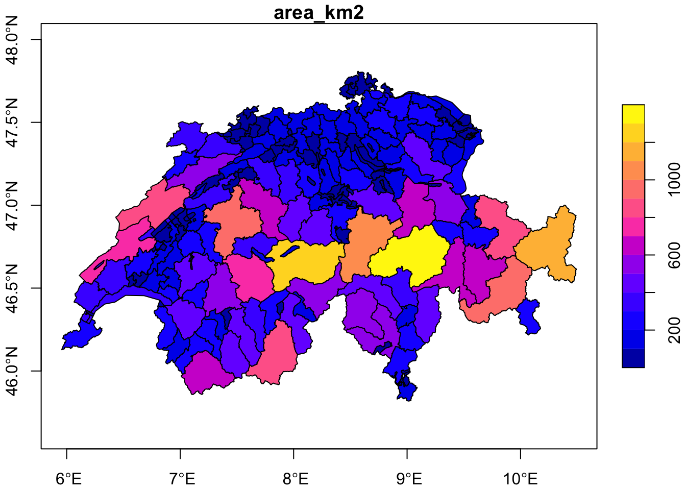
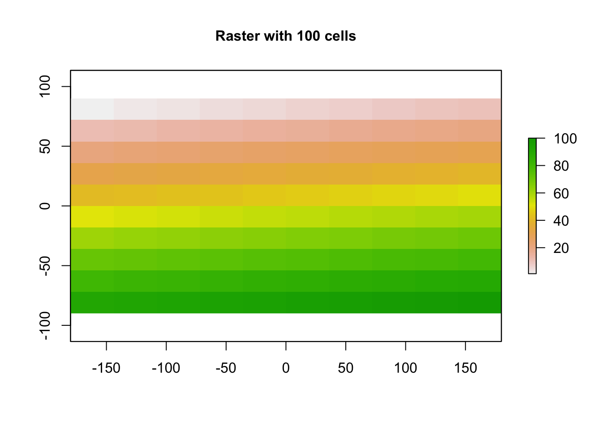
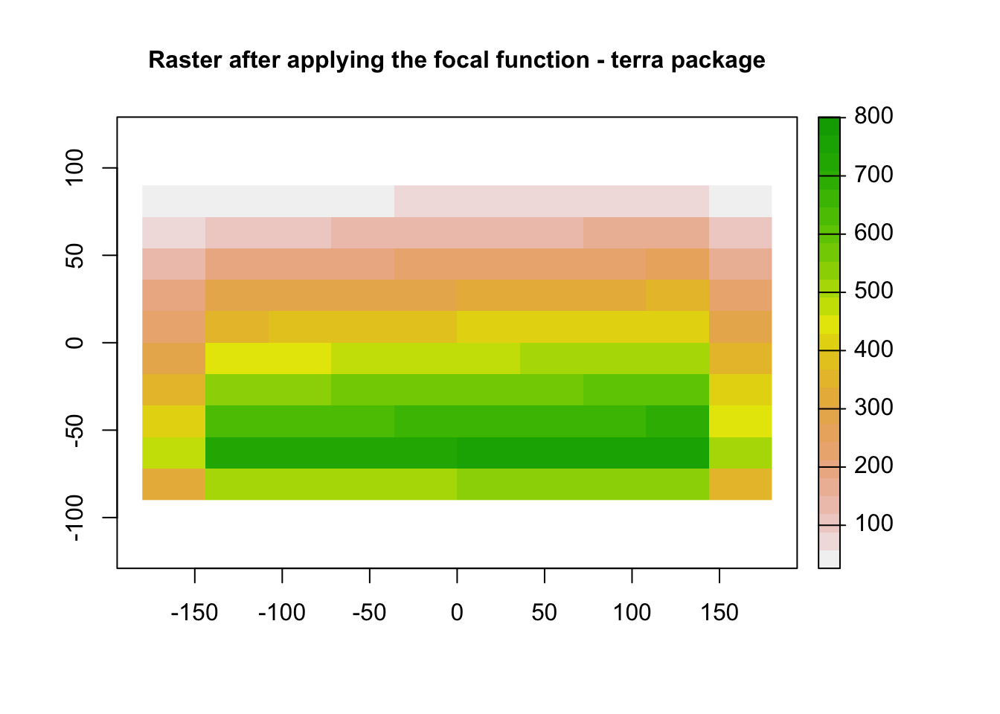
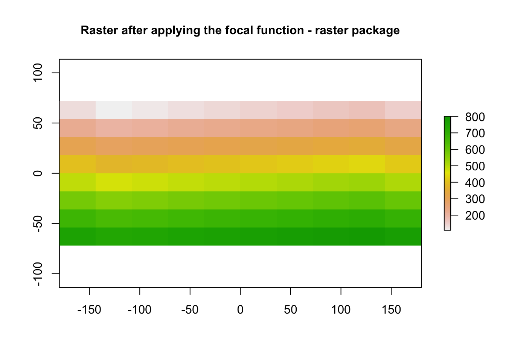

7.1 Map Algebra Toolset
7.1.1 Raster Calulator
In GIS Softwares (ArcGIS pro, QGIS etc) Raster Calculator is one of the most
commonly used tools for performing various operations with raster datasets.
For the example below we will work with 2 datasets that depict India’s population at two different timestamps.
Our goal is to produce an output raster that demonstrates the evolvement of country’s
population in this 10 years timespan. Naturally in ArcGIS pro, the aforementioned operation
would be performed with the use of Raster Calculator. Let’s explore our options with R.
# Read the data for our example
library(raster)
# India's population in 2000
india_2000 <- raster("sample_data/population_raster/india_2000.tif")
# India's population in 2010
india_2010 <- raster("sample_data/population_raster/india_2010.tif")
par(mfrow=c(1,2))
plot(india_2000)
plot(india_2010)
Let’s compute now the difference between the two rasters. To do so, there are various options. As first we can create a function that performs a simple subtraction of two rasters.
diff_rasters <- function(b1, b2){
# this function calculates the difference between two rasters of the same CRS and extent
# input: 2 raster layers of the same extent, crs that can be subtracted
# output: a single different raster of the same extent, crs of the input rasters
diff <- b2 - b1
return(diff)
}Since, we created the function for subtracting one raster from another, we use now
the function overlay of the raster package for producing the new raster output.
# Compute the raster that depicts the difference in population in these 10 years
pop2010_2000 <- overlay(india_2000, india_2010,
fun = diff_rasters)
plot(pop2010_2000,
main = "India's population difference in the timespan of 10 years",
cex.main = 1)
7.1.2 Focal Statistics
7.1.3 Zonal Statistics
Focal statisticsperforms a neighbourhood operation that computes an output raster, where the value for each output cell is a function of the values of all the input cells that are in a specified neighborhood around that location. The function performed on the input is a statistic, such as the maximum, average, or sum of all values encountered in that neighborhood. Source: https://pro.arcgis.com/en/pro-app/latest/tool-reference/spatial-analyst/how-focal-statistics-works.html
In R in order to apply functions focally to rasters, important is to define the neighbouring cells. In other words to define the moving window for each of these functions. As an example below, we will create our own raster object.
library(raster)
r <- raster(ncol=10, nrow=10)
values(r) <- 1:ncell(r)
plot(r, main='Raster with 100 cells', cex.main = 1)
We will recompute now the raster based on the focal function of the raster package. In the function
below, the neighbourhood for which we apply the statistic is represented by the argument w, while the
statistic by the argument fun.
f1 <- focal(r, w=matrix(1,nrow=3,ncol=3),fun=sum)
plot(f1, main = "Raster after applying the focal function - raster package", cex.main = 1)
The operation above can be also performed with the use of the focal function of the terra package.
wrepresents the moving window of the function. The window can be defined as one (for a square) or two numbers (row, col); or with an odd-sized weights matrix. More details can be found here: https://rdrr.io/cran/terra/man/focal.htmlfunrepresents the specified statistic for the identified neighbourhood (e.g mean,sum etc)
library(terra)
r_spat <- as(r, "SpatRaster")
f2 <- terra::focal(r_spat,w=3,fun = "sum")
plot(f2, main = "Raster after applying the focal function - terra package", cex.main = 1)
7.1.4 Zonal Statistics
Zonal Statistics tool in ArcGIS pro is used for calculating the statistics
on values of a raster within the zones of another dataset. In R we are able to produce
similar results with the use of zonal function of the raster package.
r <- raster(ncols=10, nrows=10)
# generating random numbers that will used as values in our raster layer (r) - input values raster
values(r) <- runif(ncell(r)) * 1:ncell(r)
z <- r
# generating integer values for the raster layer z, which will be used as the zone raster
values(z) <- rep(1:5, each=20)
# Zonal statistics - Summarize
zonal(r, z, "sum")## zone sum
## [1,] 1 99.58052
## [2,] 2 305.81367
## [3,] 3 475.71375
## [4,] 4 707.51735
## [5,] 5 796.50114# Zonal statistics - Mean
zonal(r, z, "mean")## zone mean
## [1,] 1 4.979026
## [2,] 2 15.290684
## [3,] 3 23.785688
## [4,] 4 35.375867
## [5,] 5 39.825057# Zonal statistics - Minimum
zonal(r, z, "min")## zone min
## [1,] 1 0.1487266
## [2,] 2 1.9187318
## [3,] 3 3.1954170
## [4,] 4 4.5574448
## [5,] 5 2.8274044